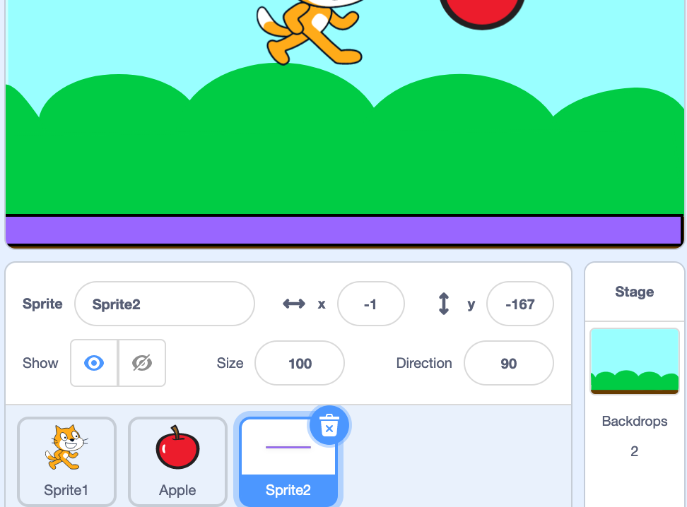

Intro -
Hi there! Welcome to The Coder School’s scratch project on making a platformer game! In this project you are going to learn how to make a game with a character that can run and jump their way to the prize!
Getting Started -
You can code in Scratch by using blocks that each do something unique. Off to the left, you’ll see that there are groups of different types of blocks that are all different colors. Each one does something new!
Choosing A Sprite -
Right now we just have the cat in our project, let’s take some time to add some more! Go over to the small picture of the cat and click on it, you will be able to see a list of new sprites for us to choose from!
These characters we include in our game are called sprites, we can have them do anything we want with code! Go ahead and try to add in 2 or 3 sprites into your game.
Lets Get Moving -
Now that we have a couple sprites in our game, choose one of them that you want to use as the main character in your game! We are going to start adding movement controls so that they can move around the level.
Click on your sprite to look at its code:
Then we will add blocks of code that always check if a key is pressed on the keyboard. Once one of them are pressed, then we will have the character move either left or right.
One more thing we will need to add are instructions for where our character to start when the game is run. Go to motion and find the “go to” block, it will look like this:
Now add it to the first grouping of code, so each time you press the green flag your character will always start at the same place!
Adding a Background -
Our character is looking pretty good at this point, now let’s add a background! Right now it’s just a white background, but we can take any picture and use it as a background in our game. We have to click on the icon of the picture, and we will be able to see a list of backgrounds for us to use:
When you see one you like, just click on it and it will become your backdrop!
Jump! -
Now we are going to add the ability for our character to jump! We are going to use the “when space key pressed” block, and when our code runs we will use repeat blocks to make our character jump! Go ahead and add this to the code for your character:
The next step is to make our character move up and down, using the change y block in motion! Look for the dark blue code group and find this:
We are going to add this block twice to our jump code. The first one will be a positive number have our character go up, and the second one will be negative to have our character move down. Like this!:
Making a Floor -
Now we get to design our floor for our character! Hover over the sprite icon, and go to the paintbrush that let’s us design a sprite’s costume:
Here we can create the sprite for our floor, we’ll use a rectangle for now. Go over to the tool that shows the rectangle and we will be able to add it to our sprite!
Once you like the way your floor is looking, move it to the bottom of the screen so that it is only on the bottom! Like this:
Gravity -
The next step is for us to add gravity to our game! Right now, if you jump a bunch of times, we don’t fall all the way down. Here is how we can change that! We are going to use a forever block to always check if we are touching the color of our floor. If we are *not* touching the color, then our y position will change to move us down in the level!
Adding more platforms -
Now is where you get to design the level for your character! Go ahead and either duplicate your ground, or design more sprites that your character can jump onto.
Hint- Make sure they are the same color so that your gravity code will work with them!
Collect the Prize -
Now that you have your level designed, let’s find one more sprite to be the prize that your character can get at the end of the level. You can use a gem, a coin, even food! Pick out the sprite you think would be good as the prize in your game and add it to the top of the level.
Now that you have it positioned, try and add some code to make it either move or change appearances! You could use a forever block to rotate it, or do something like this to make it change color over time:
Sound Check -
Your game is starting to really look good! Next we are going to start adding sounds when your character jumps to make the game more interactive. Go ahead and go to the sound section of scratch and begin looking at sounds!
Hint- here is the icon to look at the list of sounds:
Once you found one you like, go ahead and add the sound block of code to your jump controls, so that way when you press space the sound you chose will play!
Winning Screen! -
Here’s the finish line! The last step we need to do is to add code to your player sprite to end the game when they get to the prize!
Here’s how we can set it up:

To make it more interactive, go ahead and have your character say something when they get the prize!
And just like that, you have made your very own platformer game!
Challenges -
Nice job! If you made it here then you have a working platformer game, pretty sweet! Give these challenges a try and they will really help level up your game.
Add enemies to the game -
How do you think we could add enemies to the game?
Hint- They could have us reset to the beginning if our character touches them.
Make Level 2! -
Once you collect the first prize, how do you think we could have a second level begin? This is a big idea so don’t worry if the code doesn’t work perfectly the first time!
Hint- You will need to broadcast a message when your character reaches the first prize, and have all your platforms hide when that message is broadcasted.